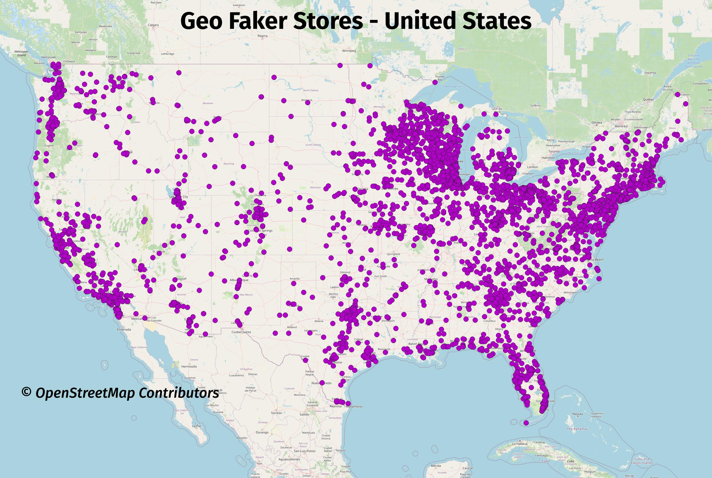
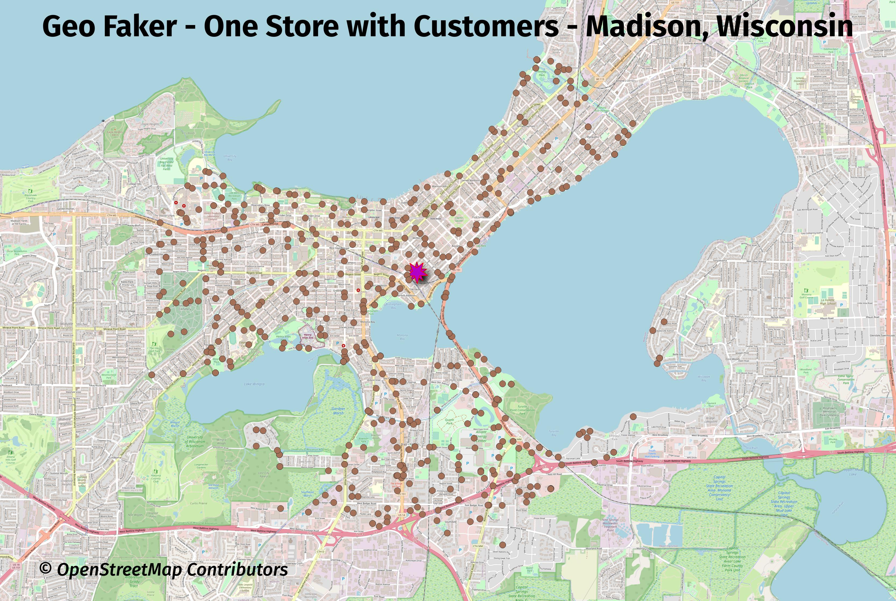
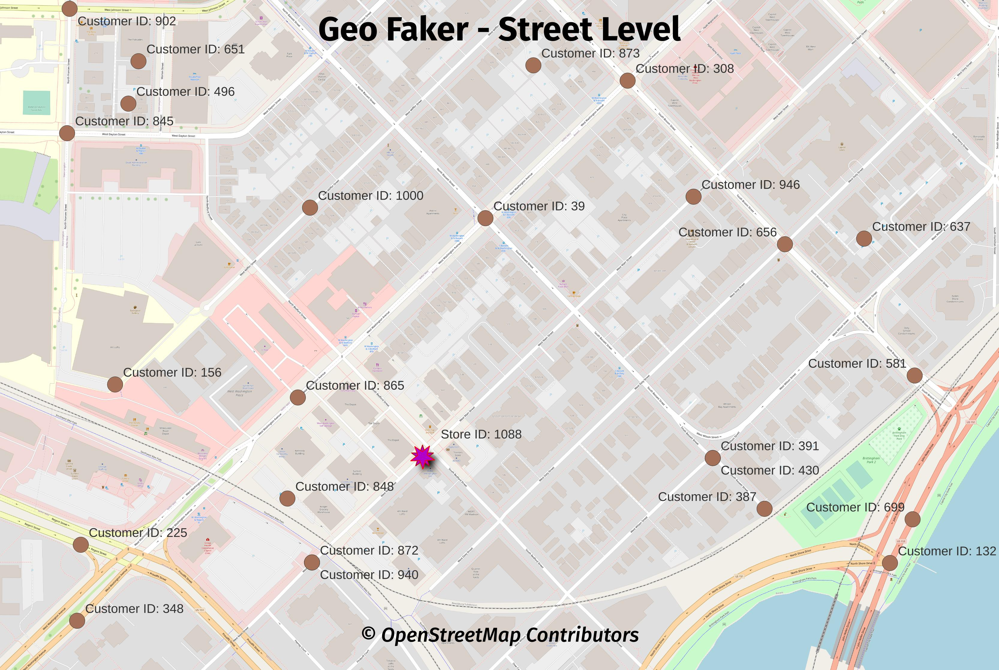

What is Geo Faker?
Geo Faker is a project to create fake geospatial data in PostGIS. The generated data is based on real OpenStreetMap region, using the region of your choice. The whole process is easy thanks to the PgOSM Flex project, which provides the main functionality used by Geo Faker.
The Geo Faker project currently creates two tables with fake store
and fake customer data, in tables geofaker.store and geofaker.customer
respectively. The use of OpenStreetMap data
as a starting point provides a sense of realism. The use of random()
and other methods to generate fake data avoid privacy concerns.
Warning: This project is in early development! Things will be changing quickly over the first few releases (e.g. before 0.5.0).
Faked Data
The following images show Geo Faker at work using the data from
the entire United States as its input. This first image shows
the store placements around the lower-48 states of the United States.
Store data is saved to the table geofaker.store.

Stores
SELECT *
FROM geofaker.store
WHERE id = 1
;
┌─[ RECORD 1 ]┬───────────────────────────────┐
│ store_id │ 1 │
│ city │ Friendship Heights │
│ street_name │ 42nd Street Northwest │
│ ref │ ¤ │
│ company │ Wolff, Bauch, and Stokes │
│ slogan │ Intuitive non-volatile niches │
│ phone │ (866) 487-9434 │
└─────────────┴───────────────────────────────┘
Customers
SELECT *
FROM geofaker.customer
WHERE id = 1
;
┌─[ RECORD 1 ]┬──────────────────────────────┐
│ id │ 1 │
│ store_id │ 1 │
│ customer_id │ 48 │
│ full_name │ Gunnar Fahey Sr. │
│ email │ louveniahettinger@hamill.biz │
│ phone │ (588) 985-5244 │
└─────────────┴──────────────────────────────┘
More images
The next image is zoomed in to show the faked store and customer data in Wisconsin, with Madison, WI in the center of the image and Milwaukee, WI on the right side. This image shows the current distribution and range of the faked customer data is not ideal. It is currently hard coded to a (inexact) 5 kilometer (km) radius. Issue #6 was opened to address that limitation.

The next map is zoomed in to one store in Madison, WI with only that store's customers selected.

An even closer view at the street level shows that all of the points are placed directly on roads. The main reason for this was to force truly random points into a more realistic set of locations.
One benefit from this decision is this makes Geo Faker data
easy to use for routing with pgrouting.

Size of data
The exact row counts will vary from run to run, even with the same inputs. The details shown below illustrate roughly what is generated with the entire U.S. as the input.
SELECT s_name, table_count, view_count, function_count,
size_plus_indexes
FROM dd.schemas WHERE s_name IN ('geofaker', 'osm')
;
┌──────────┬─────────────┬────────────┬────────────────┬───────────────────┐
│ s_name │ table_count │ view_count │ function_count │ size_plus_indexes │
╞══════════╪═════════════╪════════════╪════════════════╪═══════════════════╡
│ geofaker │ 2 │ 0 │ 3 │ 277 MB │
│ osm │ 10 │ 1 │ 4 │ 18 GB │
└──────────┴─────────────┴────────────┴────────────────┴───────────────────┘
SELECT s_name, t_name, rows, size_plus_indexes, description
FROM dd.tables
WHERE s_name IN ('geofaker')
;
┌──────────┬──────────┬─────────┬───────────────────┬───────────────────────────────────────────────────┐
│ s_name │ t_name │ rows │ size_plus_indexes │ description │
╞══════════╪══════════╪═════════╪═══════════════════╪═══════════════════════════════════════════════════╡
│ geofaker │ store │ 4331 │ 656 kB │ Created by Geo Faker, a PgOSM Flex based project. │
│ geofaker │ customer │ 3424117 │ 276 MB │ Created by Geo Faker, a PgOSM Flex based project. │
└──────────┴──────────┴─────────┴───────────────────┴───────────────────────────────────────────────────┘
Checking what was loaded in the osm.pgosm_flex table.
SELECT osm_date, region, layerset, pgosm_flex_version
FROM osm.pgosm_flex
;
┌────────────┬──────────────────┬──────────┬────────────────────┐
│ osm_date │ region │ layerset │ pgosm_flex_version │
╞════════════╪══════════════════╪══════════╪════════════════════╡
│ 2023-04-30 │ north-america-us │ faker │ 0.8.0-8fb2621 │
└────────────┴──────────────────┴──────────┴────────────────────┘
Quick Start to Geo Faker
This section covers how to get started with the Faker version of PgOSM Flex, also known as Geo Faker.
Warning: This project is in early development! Things will be changing over the first few releases (e.g. before 0.5.0).
The basic process to using Geo Faker are:
- Run PgOSM Flex with custom layerset
- Load Geo Faker objects
- Run stored procedures
- Move temp table data to real tables
Load OpenStreetMap Data
Load the region/subregion you want using the PgOSM Flex Docker image.
These instructions are modified from
PgOSM Flex's Quick Start
section. The following loads the data into a PostGIS enabled database in a geofaker
Docker container available on port 5433.
mkdir ~/pgosm-data
export POSTGRES_USER=postgres
export POSTGRES_PASSWORD=mysecretpassword
docker pull rustprooflabs/geofaker:latest
docker run --name geofaker -d --rm \
-v ~/pgosm-data:/app/output \
-v /etc/localtime:/etc/localtime:ro \
-e POSTGRES_USER=$POSTGRES_USER \
-e POSTGRES_PASSWORD=$POSTGRES_PASSWORD \
-p 5439:5432 -d rustprooflabs/geofaker
docker exec -it \
geofaker python3 docker/pgosm_flex.py \
--ram=8 \
--region=north-america/us \
--subregion=district-of-columbia \
--layerset=faker
Load and Run Faker Objects
After the data completes processing, load the Geo Faker database structures
in the geofaker schema. This deploys the functions and procedures needed,
runs the processing, and runs pg_dump saving the faked
data into ~/pgosm-data/geofaker_stores_customers.sql.
docker exec -it geofaker /bin/bash run_faker.sh
Load the saved data into a database of your choice.
psql -d pgosm_faker -f ~/pgosm-data/geofaker_stores_customers.sql
Customize
This section builds on the Quick Start section. Customizing the runtime operation of Geo Faker currently involves manually connecting to the Geo Faker database and changing things. In the near (ish?) future customization should become easier, see issue #9.
Warning: This project is in early development! Things will be changing over the first few releases (e.g. before 0.5.0).
Range and Density of Customer points
The customer points currently have two main tunable options:
_distance_scaledefault 1.5_density_scaledefault 1.0
After running the main process, you can re-run the steps creating the geofaker.customer
points using the following code. This example doubles the density scale (from 1.5 to 3)
and reduces density from 1.0 to 0.25.
See
app/run_faker.sqlfor what runs by default.
CALL geofaker.points_around_point(_distance_scale:=3,
_density_scale:=0.25);
DROP TABLE IF EXISTS geofaker.customer;
CREATE TABLE geofaker.customer AS
SELECT *
FROM faker_customer_location
ORDER BY store_id, customer_id
;
COMMENT ON TABLE geofaker.customer IS 'Created by Geo Faker, a PgOSM Flex based project.';
Custom Places for Shops
The procedure geo_faker.point_in_place_landuse() allows overriding
the inclusion of retail and commercial landuse.
This is done by creating a custom landuse_osm_types table before
running the stored procedure.
DROP TABLE IF EXISTS landuse_osm_types;
CREATE TEMP TABLE IF NOT EXISTS landuse_osm_types AS
SELECT 'college' AS osm_type
UNION
SELECT 'recreation_ground' AS osm_type
UNION
SELECT 'vineyard' AS osm_type
;
External Postgres connections
Geo Faker can load data into an external database, though the steps are currently more manual than then in-Docker. Start by setting Postgres permissions in the target database. Then setup an environment variable and run the Docker container with the additional parameters shown here.
Run the initial PgOSM Flex part of the process to load the OpenStreetMap data.
source ~/.pgosm-faker-local
docker run --name geofaker -d --rm \
-v ~/pgosm-data:/app/output \
-v /etc/localtime:/etc/localtime:ro \
-e POSTGRES_USER=$POSTGRES_USER \
-e POSTGRES_PASSWORD=$POSTGRES_PASSWORD \
-e POSTGRES_HOST=$POSTGRES_HOST \
-e POSTGRES_DB=$POSTGRES_DB \
-e POSTGRES_PORT=$POSTGRES_PORT \
-p 5439:5432 -d rustprooflabs/geofaker
docker exec -it \
geofaker python3 docker/pgosm_flex.py \
--ram=8 \
--region=north-america/us \
--subregion=colorado \
--layerset=faker
From the geofaker directory, change into the db folder to deploy the Sqitch
schema needed for Geo Faker.
cd ~/git/geofaker/db
sqitch db:pg://$POSTGRES_USER:$POSTGRES_PASSWORD@$POSTGRES_HOST:$POSTGRES_PORT/$POSTGRES_DB deploy
You can run the SQL steps exactly from the script. Or customize them first.
psql -d postgres://$POSTGRES_USER:$POSTGRES_PASSWORD@$POSTGRES_HOST:$POSTGRES_PORT/$POSTGRES_DB \
-f ~/git/geofaker/run_faker.sql
Docker image
Warning: This project is in early development! Things will be changing over the first few releases (e.g. before 0.5.0).
Building the image
Build latest. Occasionally run with --no-cache to force some software updates.
docker pull rustprooflabs/pgosm-flex:latest
docker build -t rustprooflabs/geofaker:latest .
docker push rustprooflabs/geofaker:latest